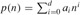

|
|
< Day Day Up > |
|
The notations we use to describe the asymptotic running time of an algorithm are defined in terms of functions whose domains are the set of natural numbers N = {0, 1, 2, ...}. Such notations are convenient for describing the worst-case running-time function T (n), which is usually defined only on integer input sizes. It is sometimes convenient, however, to abuse asymptotic notation in a variety of ways. For example, the notation is easily extended to the domain of real numbers or, alternatively, restricted to a subset of the natural numbers. It is important, however, to understand the precise meaning of the notation so that when it is abused, it is not misused. This section defines the basic asymptotic notations and also introduces some common abuses.
In Chapter 2, we found that the worst-case running time of insertion sort is T (n) = Θ(n2). Let us define what this notation means. For a given function g(n), we denote by Θ(g(n)) the set of functions
Θ(g(n)) = {f(n) : there exist positive constants c1, c2, and n0 such that 0 ≤ c1g(n) ≤ f(n) ≤ c2g(n) for all n ≥ n0}.[1]
A function f(n) belongs to the set Θ(g(n)) if there exist positive constants c1 and c2 such that it can be "sandwiched" between c1g(n) and c2g(n), for sufficiently large n. Because Θ(g(n)) is a set, we could write "f(n) ∈ Θ(g(n))" to indicate that f(n) is a member of Θ(g(n)). Instead, we will usually write "f(n) = Θ(g(n))" to express the same notion. This abuse of equality to denote set membership may at first appear confusing, but we shall see later in this section that it has advantages.
Figure 3.1(a) gives an intuitive picture of functions f(n) and g(n), where we have that f(n) = Θ(g(n)). For all values of n to the right of n0, the value of f(n) lies at or above c1g(n) and at or below c2g(n). In other words, for all n ≥ n0, the function f(n) is equal to g(n) to within a constant factor. We say that g(n) is an asymptotically tight bound for f(n).
The definition of Θ(g(n)) requires that every member f(n) ∈ Θ(g(n)) be asymptotically nonnegative, that is, that f(n) be nonnegative whenever n is sufficiently large. (An asymptotically positive function is one that is positive for all sufficiently large n.) Consequently, the function g(n) itself must be asymptotically nonnegative, or else the set Θ(g(n)) is empty. We shall therefore assume that every function used within Θ-notation is asymptotically nonnegative. This assumption holds for the other asymptotic notations defined in this chapter as well.
In Chapter 2, we introduced an informal notion of Θ-notation that amounted to throwing away lower-order terms and ignoring the leading coefficient of the highest-order term. Let us briefly justify this intuition by using the formal definition to show that 1/2n2 - 3n = Θ(n2). To do so, we must determine positive constants c1, c2, and n0 such that
c1n2 ≤ 1/2n2 - 3n ≤ c2n2
for all n ≥ n0. Dividing by n2 yields
c1 ≤ 1/2 - 3/n ≤ c2.
The right-hand inequality can be made to hold for any value of n ≥ 1 by choosing c2 ≥ 1/2. Likewise, the left-hand inequality can be made to hold for any value of n ≥ 7 by choosing c1 ≤ 1/14. Thus, by choosing c1 = 1/14, c2 = 1/2, and n0 = 7, we can verify that 1/2n2 - 3n = Θ(n2). Certainly, other choices for the constants exist, but the important thing is that some choice exists. Note that these constants depend on the function 1/2n2 - 3n; a different function belonging to Θ(n2) would usually require different constants.
We can also use the formal definition to verify that 6n3 ≠ Θ(n2). Suppose for the purpose of contradiction that c2 and n0 exist such that 6n3 ≤ c2n2 for all n ≥ n0. But then n ≤ c2/6, which cannot possibly hold for arbitrarily large n, since c2 is constant.
Intuitively, the lower-order terms of an asymptotically positive function can be ignored in determining asymptotically tight bounds because they are insignificant for large n. A tiny fraction of the highest-order term is enough to dominate the lower-order terms. Thus, setting c1 to a value that is slightly smaller than the coefficient of the highest-order term and setting c2 to a value that is slightly larger permits the inequalities in the definition of Θ-notation to be satisfied. The coefficient of the highest-order term can likewise be ignored, since it only changes c1 and c2 by a constant factor equal to the coefficient.
As an example, consider any quadratic function f(n) = an2 + bn + c, where a, b, and c are constants and a > 0. Throwing away the lower-order terms and ignoring the constant yields f(n) = Θ(n2). Formally, to show the same thing, we take the constants c1 = a/4, c2 = 7a/4, and . The reader may verify that 0 ≤ c1n2 ≤ an2 + bn + c ≤ c2n2 for all n ≥ n0. In general, for any polynomial , where the ai are constants and ad > 0, we have p(n) = Θ(nd) (see Problem 3-1).
Since any constant is a degree-0 polynomial, we can express any constant function as Θ(n0), or Θ(1). This latter notation is a minor abuse, however, because it is not clear what variable is tending to infinity.[2] We shall often use the notation Θ(1) to mean either a constant or a constant function with respect to some variable.
The Θ-notation asymptotically bounds a function from above and below. When we have only an asymptotic upper bound, we use O-notation. For a given function g(n), we denote by O(g(n)) (pronounced "big-oh of g of n" or sometimes just "oh of g of n") the set of functions
O(g(n)) = {f(n): there exist positive constants c and n0 such that 0 ≤ f(n) ≤ cg(n) for all n ≥ n0}.
We use O-notation to give an upper bound on a function, to within a constant factor. Figure 3.1(b) shows the intuition behind O-notation. For all values n to the right of n0, the value of the function f(n) is on or below g(n).
We write f(n) = O(g(n)) to indicate that a function f(n) is a member of the set O(g(n)). Note that f(n) = Θ(g(n)) implies f(n) = O(g(n)), since Θ-notation is a stronger notion than O-notation. Written set-theoretically, we have Θ(g(n)) ⊆ O(g(n)). Thus, our proof that any quadratic function an2 + bn + c, where a > 0, is in Θ(n2) also shows that any quadratic function is in O(n2). What may be more surprising is that any linear function an + b is in O(n2), which is easily verified by taking c = a + |b| and n0 = 1.
Some readers who have seen O-notation before may find it strange that we should write, for example, n = O(n2). In the literature, O-notation is sometimes used informally to describe asymptotically tight bounds, that is, what we have defined using Θ-notation. In this book, however, when we write f(n) = O(g(n)), we are merely claiming that some constant multiple of g(n) is an asymptotic upper bound on f(n), with no claim about how tight an upper bound it is. Distinguishing asymptotic upper bounds from asymptotically tight bounds has now become standard in the algorithms literature.
Using O-notation, we can often describe the running time of an algorithm merely by inspecting the algorithm's overall structure. For example, the doubly nested loop structure of the insertion sort algorithm from Chapter 2 immediately yields an O(n2) upper bound on the worst-case running time: the cost of each iteration of the inner loop is bounded from above by O(1) (constant), the indices i and j are both at most n, and the inner loop is executed at most once for each of the n2 pairs of values for i and j.
Since O-notation describes an upper bound, when we use it to bound the worst-case running time of an algorithm, we have a bound on the running time of the algorithm on every input. Thus, the O(n2) bound on worst-case running time of insertion sort also applies to its running time on every input. The Θ(n2) bound on the worst-case running time of insertion sort, however, does not imply a Θ(n2) bound on the running time of insertion sort on every input. For example, we saw in Chapter 2 that when the input is already sorted, insertion sort runs in Θ(n) time.
Technically, it is an abuse to say that the running time of insertion sort is O(n2), since for a given n, the actual running time varies, depending on the particular input of size n. When we say "the running time is O(n2)," we mean that there is a function f(n) that is O(n2) such that for any value of n, no matter what particular input of size n is chosen, the running time on that input is bounded from above by the value f(n). Equivalently, we mean that the worst-case running time is O(n2).
Just as O-notation provides an asymptotic upper bound on a function, Ω-notation provides an asymptotic lower bound. For a given function g(n), we denote by Ω(g(n)) (pronounced "big-omega of g of n" or sometimes just "omega of g of n") the set of functions
Ω(g(n)) = {f(n): there exist positive constants c and n0 such that 0 ≤ cg(n) ≤ f(n) for all n ≥ n0}.
The intuition behind Ω-notation is shown in Figure 3.1(c). For all values n to the right of n0, the value of f(n) is on or above cg(n).
From the definitions of the asymptotic notations we have seen thus far, it is easy to prove the following important theorem (see Exercise 3.1-5).
For any two functions f(n) and g(n), we have f(n) = Θ(g(n)) if and only if f(n) = O(g(n)) and f(n) = Ω(g(n)).
As an example of the application of this theorem, our proof that an2 + bn + c = Θ(n2) for any constants a, b, and c, where a > 0, immediately implies that an2 + bn + c = Ω(n2) and an2 + bn + c = O(n2). In practice, rather than using Theorem 3.1 to obtain asymptotic upper and lower bounds from asymptotically tight bounds, as we did for this example, we usually use it to prove asymptotically tight bounds from asymptotic upper and lower bounds.
Since Ω-notation describes a lower bound, when we use it to bound the best-case running time of an algorithm, by implication we also bound the running time of the algorithm on arbitrary inputs as well. For example, the best-case running time of insertion sort is Ω(n), which implies that the running time of insertion sort is Ω(n).
The running time of insertion sort therefore falls between Ω(n) and O(n2), since it falls anywhere between a linear function of n and a quadratic function of n. Moreover, these bounds are asymptotically as tight as possible: for instance, the running time of insertion sort is not Ω(n2), since there exists an input for which insertion sort runs in Θ(n) time (e.g., when the input is already sorted). It is not contradictory, however, to say that the worst-case running time of insertion sort is Ω(n2), since there exists an input that causes the algorithm to take Ω(n2) time. When we say that the running time (no modifier) of an algorithm is Ω(g(n)), we mean that no matter what particular input of size n is chosen for each value of n, the running time on that input is at least a constant times g(n), for sufficiently large n.
We have already seen how asymptotic notation can be used within mathematical formulas. For example, in introducing O-notation, we wrote "n = O(n2)." We might also write 2n2 + 3n + 1 = 2n2 + Θ(n). How do we interpret such formulas?
When the asymptotic notation stands alone on the right-hand side of an equation (or inequality), as in n = O(n2), we have already defined the equal sign to mean set membership: n ∈ O(n2). In general, however, when asymptotic notation appears in a formula, we interpret it as standing for some anonymous function that we do not care to name. For example, the formula 2n2 + 3n + 1 = 2n2 + Θ(n) means that 2n2 + 3n + 1 = 2n2 + f(n), where f(n) is some function in the set Θ(n). In this case, f(n) = 3n + 1, which indeed is in Θ(n).
Using asymptotic notation in this manner can help eliminate inessential detail and clutter in an equation. For example, in Chapter 2 we expressed the worst-case running time of merge sort as the recurrence
If we are interested only in the asymptotic behavior of T(n), there is no point in specifying all the lower-order terms exactly; they are all understood to be included in the anonymous function denoted by the term Θ(n).
The number of anonymous functions in an expression is understood to be equal to the number of times the asymptotic notation appears. For example, in the expression
there is only a single anonymous function (a function of i). This expression is thus not the same as O(1) + O(2) + . . . + O(n), which doesn't really have a clean interpretation.
In some cases, asymptotic notation appears on the left-hand side of an equation, as in
2n2 + Θ(n) = Θ(n2).
We interpret such equations using the following rule: No matter how the anonymous functions are chosen on the left of the equal sign, there is a way to choose the anonymous functions on the right of the equal sign to make the equation valid. Thus, the meaning of our example is that for any function f(n) ∈ Θ(n), there is some function g(n) ∈ Θ(n2) such that 2n2 + f(n) = g(n) for all n. In other words, the right-hand side of an equation provides a coarser level of detail than the left-hand side.
A number of such relationships can be chained together, as in
|
2n2 + 3n + 1 |
= |
2n2 + Θ(n) |
|
= |
Θ(n2). |
We can interpret each equation separately by the rule above. The first equation says that there is some function f(n) ∈ Θ(n) such that 2n2 + 3n + 1 = 2n2 + f(n) for all n. The second equation says that for any function g(n) ∈ Θ(n) (such as the f(n) just mentioned), there is some function h(n) ∈ Θ(n2) such that 2n2 + g(n) = h(n) for all n. Note that this interpretation implies that 2n2 + 3n + 1 = Θ(n2), which is what the chaining of equations intuitively gives us.
The asymptotic upper bound provided by O-notation may or may not be asymptotically tight. The bound 2n2 = O(n2) is asymptotically tight, but the bound 2n = O(n2) is not. We use o-notation to denote an upper bound that is not asymptotically tight. We formally define o(g(n)) ("little-oh of g of n") as the set
o(g(n)) = {f(n) : for any positive constant c > 0, there exists a constant n0 > 0 such that 0 ≤ f(n) < cg(n) for all n ≥ n0}.
For example, 2n = o(n2), but 2n2 ≠ o(n2).
The definitions of O-notation and o-notation are similar. The main difference is that in f(n) = O(g(n)), the bound 0 ≤ f(n) ≤ cg(n) holds for some constant c > 0, but in f(n) = o(g(n)), the bound 0 ≤ f(n) < cg(n) holds for all constants c > 0. Intuitively, in the o-notation, the function f(n) becomes insignificant relative to g(n) as n approaches infinity; that is,
| (3.1) |
Some authors use this limit as a definition of the o-notation; the definition in this book also restricts the anonymous functions to be asymptotically nonnegative.
By analogy, ω-notation is to Ω-notation as o-notation is to O-notation. We use ω-notation to denote a lower bound that is not asymptotically tight. One way to define it is by
f(n) ∈ ω(g(n)) if and only if g(n) ∈ o(f(n)).
Formally, however, we define ω(g(n)) ("little-omega of g of n") as the set
ω(g(n)) = {f(n): for any positive constant c > 0, there exists a constant n0 > 0 such that 0 ≤ cg(n) < f(n) for all n ≥ n0}.
For example, n2/2 = ω(n), but n2/2 ≠ ω(n2). The relation f(n) = ω(g(n)) implies that
if the limit exists. That is, f(n) becomes arbitrarily large relative to g(n) as n approaches infinity.
Many of the relational properties of real numbers apply to asymptotic comparisons as well. For the following, assume that f(n) and g(n) are asymptotically positive.
|
f(n) = Θ(g(n)) and g(n) = Θ(h(n)) |
imply |
f(n) = Θ(h(n)), |
|
f(n) = O(g(n)) and g(n) = O(h(n)) |
imply |
f(n) = O(h(n)), |
|
f(n) = Ω(g(n)) and g(n) = Ω(h(n)) |
imply |
f(n) = Ω(h(n)), |
|
f(n) = o(g(n)) and g(n) = o(h(n)) |
imply |
f(n) = o(h(n)), |
|
f(n) = ω(g(n)) and g(n) = ω(h(n)) |
imply |
f(n) = ω(h(n)). |
|
f(n) = O(g(n)) |
if and only if |
g(n) = Ω(f(n)), |
|
f(n) = o(g(n)) |
if and only if |
g(n) = ω(f(n)). |
Because these properties hold for asymptotic notations, one can draw an analogy between the asymptotic comparison of two functions f and g and the comparison of two real numbers a and b:
|
f(n) = O(g(n)) |
≈ |
a ≤ b, |
|
f(n) = Ω(g(n)) |
≈ |
a ≥ b, |
|
f(n) = Θ(g(n)) |
≈ |
a = b, |
|
f(n) = o(g(n)) |
≈ |
a < b, |
|
f(n) = ω(g(n)) |
≈ |
a > b. |
We say that f(n) is asymptotically smaller than g(n) if f(n) = o(g(n)), and f(n) is asymptotically larger than g(n) if f(n) = ω(g(n)).
One property of real numbers, however, does not carry over to asymptotic notation:
Trichotomy: For any two real numbers a and b, exactly one of the following must hold: a < b, a = b, or a > b.
Although any two real numbers can be compared, not all functions are asymptotically comparable. That is, for two functions f(n) and g(n), it may be the case that neither f(n) = O(g(n)) nor f(n) = Ω(g(n)) holds. For example, the functions n and n1+sin n cannot be compared using asymptotic notation, since the value of the exponent in n1+sin n oscillates between 0 and 2, taking on all values in between.
Let f(n) and g(n) be asymptotically nonnegative functions. Using the basic definition of Θ-notation, prove that max(f(n), g(n)) = Θ(f(n) + g(n)).
Explain why the statement, "The running time of algorithm A is at least O(n2)," is meaningless.
Prove that the running time of an algorithm is Θ(g(n)) if and only if its worst-case running time is O(g(n)) and its best-case running time is Ω(g(n)).
We can extend our notation to the case of two parameters n and m that can go to infinity independently at different rates. For a given function g(n, m), we denote by O(g(n, m)) the set of functions
O(g(n, m)) = {f(n, m): there exist positive constants c, n0, and m0 such that 0 ≤ f(n, m) ≤ cg(n, m) for all n ≥ n0 and m ≥ m0}.
Give corresponding definitions for Ω(g(n, m)) and Θ(g(n, m)).
[1]Within set notation, a colon should be read as "such that."
[2]The real problem is that our ordinary notation for functions does not distinguish functions from values. In λ-calculus, the parameters to a function are clearly specified: the function n2 could be written as λn.n2, or even λr.r2. Adopting a more rigorous notation, however, would complicate algebraic manipulations, and so we choose to tolerate the abuse.
|
|
< Day Day Up > |
|